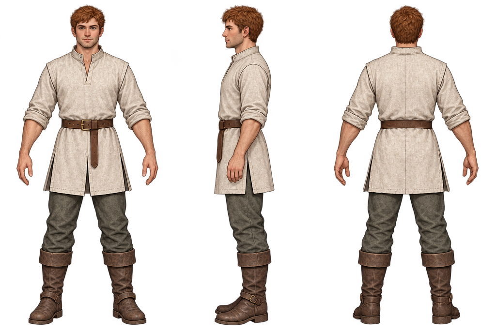
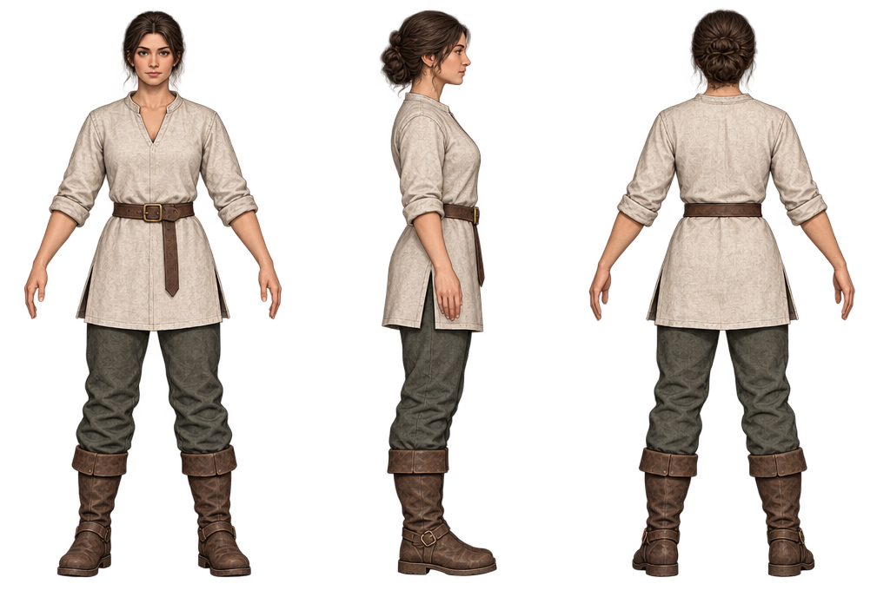

One library. Both body variants.
Comparable adult travel kit, front / profile / rear. Every role and equipment family must be fitted and tested for male and female bodies. These are design references; the licensed 3D prototype files are separate.
Male reference

Female reference

Review: useful grounded proportions; opaque painted backdrop despite transparency request. Neckline/tailoring differs: normalize the garment pattern before production. No animation or gear-fitting approval implied.
Search actual body and outfit resources · Fit matrix and acceptance rules